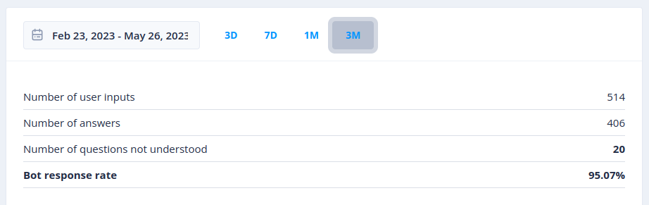
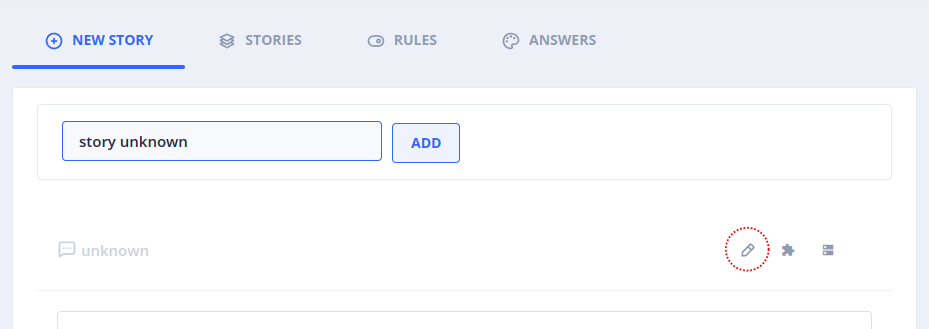
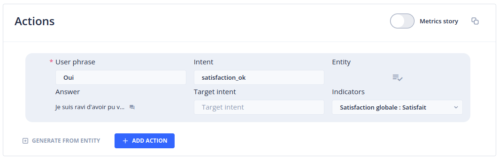
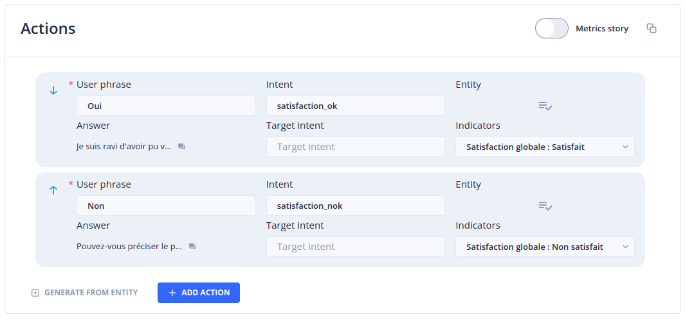
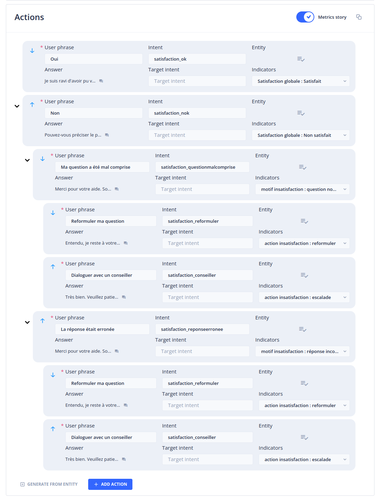
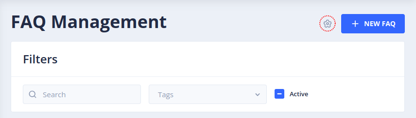
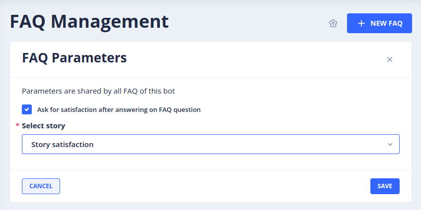

Le menu Custom Metrics
Le menu Custom Metrics permet de créer et visualiser des statistiques de consultation et d'usage des stories Tock. Il est destiné à un public métier qui souhaite monitorer la performance des stories (faqs, scénarios...) au sein d'une application Tock.
Pour accéder à cette page il faut bénéficier du rôle botUser.
Onglet Metrics
Cette page permet d'afficher un certain nombre de statistiques orientées métiers (à la différence du menu Analytics dont les statistiques portent sur des critères techniques).
Les statistiques sont affichées pour une période donnée, spécifiable à l'aide du champ proposé en début de page. Sur sa droite, un ensemble de raccourcis permettent de définir cette période en un clic (3 derniers jours, 7 derniers jours, 30 derniers jours et 3 derniers mois).
Viennent ensuite, pour la période choisie, les statistiques suivantes :
- Nombre de messages utilisateurs
- Nombre de réponses apportées par le bot
- Nombre de questions non comprises par le bot
- Taux de réponse du bot

Pour pouvoir obtenir des statistiques fiables et correctement ventilées, il est nécessaire de créer une story de type unknown (cf. section Créer une story Unknown).
Section Number of user messages
Ce graphique affiche le nombre de messages utilisateurs par jour pour la période demandée
Section Distribution of stories
Ce graphique affiche la répartition des stories déclenchées à la suite des questions utilisateurs. Le survol des entrées du graphique permet d'obtenir le nombre de fois ou la story a été déclenchée ainsi que le la part prise par cette story dans le nombre total des stories déclenchées pour la période demandée.
Si le nombre de stories à afficher dépasse un certain seuil, une catégorie Other stories sera affichée réunissant les stories ayant enregistré les plus faibles taux de déclenchement.
Un clic sur n'importe laquelle des entrées du graphique permet d'ouvrir une fenêtre affichant ces mêmes statistiques sous forme de liste détaillée (et d'afficher éventuellement le détail des Other stories)
A la droite du titre de section, un menu déroulant permet de filtrer les stories affichées par type et/ou catégorie. Il permet également d'afficher les stories metrics qui ne sont pas listées par défaut.
Section Indicators
Les indicateurs, associés à des metrics stories, permettent d'enregistrer des retours des utilisateurs, généralement dans le cadre d'une story de satisfaction ou d'un sondage. Pour plus d'informations sur la création d'indicateurs et leur assignation à des metrics stories, référez vous aux sections Indicators et Metrics Stories
Une liste déroulante à la droite du titre de section permet de sélectionner la dimension d'indicateurs à afficher. Une dimension est une réunion d'indicateurs (cf. Onglet Indicators).
Pour chaque indicateur de la dimension choisie, un graphique affiche la répartition des réponses apportées par les utilisateurs. La section grise No answer given correspond au nombre de fois où un utilisateur n'a pas répondu à la question posée. Le survol des portions du graphique permet d'afficher le nombre de réponses fournies pour chaque option d'indicateur ainsi que le pourcentage représenté de l'ensemble des fois où la question correspondante à été posée.
Pour chaque graphique, un bouton Detail by story est proposé. Detail by story affiche une fenêtre réunissant les graphiques des réponses apportées à cet indicateur par story.
Onglet Indicators
Les Indicators servent à mesurer la satisfaction utilisateur ou à réaliser des sondages.
Un indicateur correspond généralement à une question qui sera posée aux utilisateurs après l'exécution d'une story. Il réunit une ou plusieurs valeurs correspondant aux réponses possibles à cette question.
Une fois définis, les indicateurs pourront être associés à des Actions de Metric story. La Metric story pourra à son tour être définie comme story de satisfaction de vos Faqs ou autres types de stories. Pour plus d'informations sur la définition de Metric story, référez vous à la section Metrics Stories.
Cette page liste l'ensemble des indicateurs existants.
Un indicateur se compose des éléments suivants :
- Son label
- La dimension à laquelle il appartient
- Ses valeurs possibles
Un indicateur doit nécessairement appartenir à au moins une dimension mais un même indicateur peut appartenir à plusieurs dimensions différentes. Les dimensions sont de simples regroupements d'indicateurs facilitant leur manipulation et leur consultation.
Les actions suivantes sont disponibles pour chaque indicateur :
- Edit : permet de modifier les attributs de l'indicateur (label, description, dimensions, valeurs)
- Delete : permet de supprimer l'indicateur. A noter que la suppression d'un indicateur interdira la consultation des statistiques enregistrées pour cet indicateur.
Création d'un indicateur
Vous pouvez créer un nouvel indicateur en cliquant sur le bouton + New Indicator en haut à droite de la page. Cela ouvre un panneau dans lequel vous pouvez définir :
- Le label de l'indicateur
- Une description (optionnelle)
- Une ou plusieurs dimensions auxquelles l'indicateur sera rattaché
- Une ou plusieurs valeurs qu'est susceptible de porter l'indicateur
Par exemple, nous pouvons imaginer un indicateur "Satisfaction" qui porte les valeurs "Satisfait" et "Non satisfait".
A noter que le nom de l'indicateur et ses valeurs ne seront pas directement affichés aux utilisateurs. Les phrases de questions et réponses seront définies au niveau des actions de la Metric story que vous serez amenés à créer à l'étape suivante. Vous pouvez donc choisir un label et des valeurs simples qui faciliterons leur manipulation.
A titre d'exemple, nous pouvons imaginer une dimension qui réunit les indicateurs et valeurs suivantes :
- DIMENSION : Satisfaction
- INDICATEUR : Satisfaction globale
- VALEUR : Satisfait
- VALEUR : Non satisfait
- INDICATEUR : Motif d'insatisfaction
- VALEUR : Question non comprise
- VALEUR : Réponse incorrecte
- INDICATEUR : Action insatisfaction
- VALEUR : Rediriger vers un humain
- VALEUR : Reformuler ma question
Sur la base de cet ensemble d'indicateurs, nous pourrons configurer une Metric story posant un ensemble de questions aux utilisateurs et enregistrant leurs réponses dans l'objectif d'améliorer notre Bot (cf. Metrics Stories).
Filtres
Il est possible de rechercher des indicateurs en saisissant du texte dans le champ Search.
Il est également possible de filtrer la liste des indicateurs en sélectionnant une ou plusieurs dimensions dans la liste déroulante.
Créer une Story Unknown
De façon à distinguer explicitement les questions utilisateurs non comprises par le bot, il est nécessaire de créer une story unknown. Cette story sera retournée par le bot dans les cas où il n'a pas identifié d'intent correspondant aux questions utilisateurs. La story unknown permet en outre de prévoir un message à afficher à l'utilisateur dans le cas où sa question n'a pas été comprise.
Pour créer une story unknown, rendez vous sur Stories & Answers dans le menu principal et accédez à l'onglet New story.
Dans le champ proposé, donnez un nom à votre story unknown (par exemple story unknown) et cliquez sur le bouton add.
Sur la page qui apparaît, cliquez sur le bouton Edit story.

Une fenêtre s'ouvre. Dans le champ Intent saisissez la chaîne de caractères unknown et cliquez sur Save.
Dans la section Answers saisissez la réponse à retourner aux utilisateurs lorsque leur question n'a pas été comprise, puis cliquez sur Create story.
Metrics Stories
Une fois définis, les indicateurs doivent être associés aux actions d'une story pour pouvoir être déclenchés par les utilisateurs et ainsi donner lieu à l'enregistrement d'un hit.
Création d'une Metrics Story de satisfaction
Depuis le menu principal, accédez à Stories & Answers puis à l'onglet New story.
Dans le champ proposé, saisissez le nom de votre story de satisfaction (par exemple Story satisfaction) puis validez.
Dans le champ Answer, saisissez une invite utilisateur (par exemple Etes-vous satisfait de la réponse apportée ?)
Dans la section Actions, ajoutez une première action à l'aide du bouton + Add action :
Définissez la User phrase de l'action (par exemple Oui).
Indiquez un nom d'Intent pour l'action (par exemple satisfaction_ok). Une fenêtre s'affiche pour valider la création de l'intent. Validez en cliquant sur le bouton Create.
Saisissez une réponse à l'aide du champ Answer de l'action (par exemple Je suis ravi d'avoir pu vous aider).
Dans la liste Indicators, sélectionnez la valeur de l'indicateur prévu à cet effet (dans notre exemple, Satisfaction globale : Satisfait).

Répétez l'opération pour l'action "Non satisfait" :
Dans la section Actions, ajoutez une deuxième action à l'aide du bouton + Add action.
Définissez la User phrase de l'action (par exemple Non).
Indiquez un nom d'Intent pour l'action (par exemple satisfaction_nok).
Saississez une réponse à l'aide du champ Answer (par exemple Pouvez-vous préciser le problème rencontré ?).
Dans la liste Indicators, sélectionnez la valeur de l'indicateur prévu à cet effet (dans notre exemple, Satisfaction globale : Non satisfait).

Vous allez maintenant pouvoir définir les Actions à proposer aux utilisateurs qui ont répondu Non à la question initiale :
A l'aide de la souris, survolez la deuxième action créée portant la user phrase Non. Un menu contextuel apparaît en partie basse de l'action. Cliquez sur Add action. Dépliez l'action à l'aide du chevron apparu à gauche de celle-ci.
Définissez la User phrase de l'action (par exemple Ma question a été mal comprise).
Indiquez un nom d'Intent pour l'action (par exemple satisfaction_questionmalcomprise).
Saisissez une réponse à l'aide du champ Answer (par exemple Merci pour votre aide. Souhaitez-vous essayer de reformuler votre question ou être mis en relation avec un conseiller ?).
Dans la liste Indicators, sélectionnez la valeur de l'indicateur prévu à cet effet (dans notre exemple, Satisfaction globale : question non comprise).

Poursuivez les opérations décrites ci-dessus jusqu'à avoir entièrement défini votre story de satisfaction en fonction des indicateurs voulus.
Maintenant que vous avez assigné au moins un indicateur à une action, vous avez la possibilité de marquer cette story comme Metric story grâce au commutateur situé en haut à droite de la section Actions.

Vous pouvez désormais valider la création de la Metric story en cliquant sur le bouton Create story en bas de page.
Une story marquée comme Metric story permet d'enregistrer la satisfaction pour la story précédemment déclenchée par l'utilisateur. Une Metric story doit donc être définie comme story de redirection de stories métier. Les indicateurs enregistrés suite aux réponses des utilisateurs feront donc référence à la story qui a été exécutée juste avant le déclenchement de la Metric story. Si des indicateurs sont associés aux actions d'une story non marquée comme Metric story, les statistiques enregistrées ne porteront que sur la story portant ces actions.
Définition d'une Metric Story comme story de redirection
Pour définir une Metric Story comme story de redirection de l'ensemble vos Faqs, rendez-vous, à l'aide du menu principal, sur l'entrée Faq Management.
Cliquez sur l'icône Faq parameters en haut à droite de la page.

Activez la case à cocher Ask for satisfaction after answering on FAQ question puis sélectionnez la Metric story précédemment créée.

Cliquez sur le bouton Save.
Désormais, après chaque exécution d'une story de type Faq, la story "Story satisfaction" sera déclenchée et permettra de demander aux utilisateurs un retour d'expérience.
Pour un réglage plus fin des stories donnant lieu à une redirection, rendez-vous sur Stories & Answers, onglet Rules